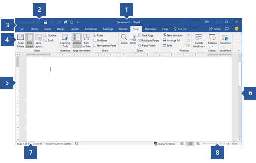
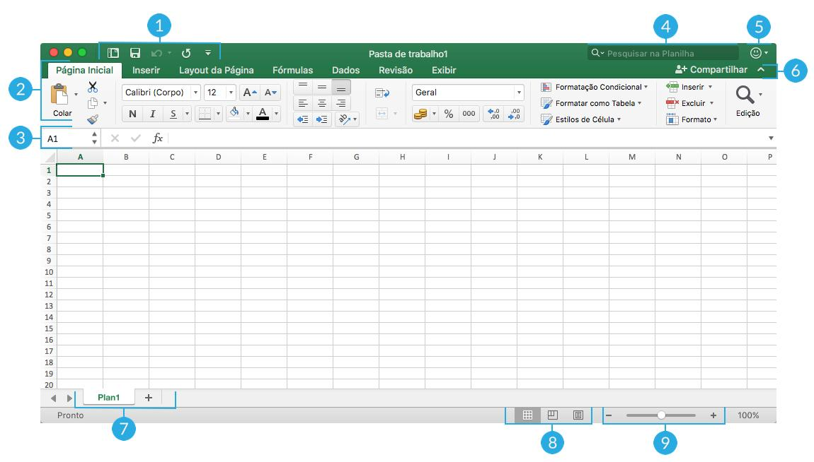
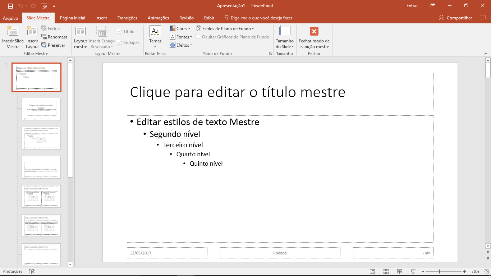

| Programa | Definição | Imagem |
|---|---|---|
| Word | O Microsoft Word é um processador de texto produzido pela Microsoft Office foi criado por Richard Brodie para computadores IBM PC com o sistema operacional DOS em 1983. |  |
| Excel | O Microsoft Excel é um editor de planilhas produzido pela Microsoft para computadores que utilizam o sistema operacional Microsoft Windows, além de computadores Macintosh da Apple Inc. e dispositivos móveis como o Windows Phone, Android ou o iOS. |  |
| PowerPoint | Microsoft PowerPoint é um programa utilizado para criação/edição e exibição de apresentações gráficas, originalmente escrito para o sistema operacional Windows e portado para a plataforma Mac OS X. |  |